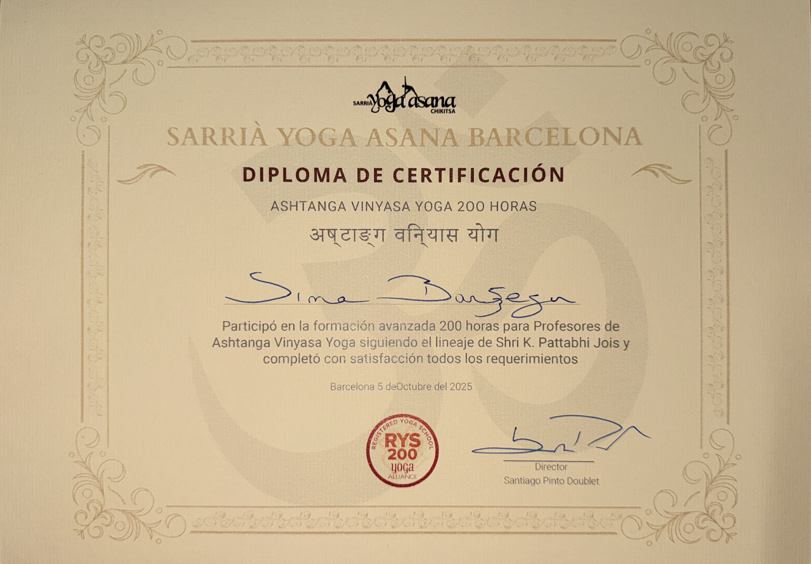

Movement and stillness
A 200-hour certified Ashtanga Vinyasa yoga teacher, and a believer in slowing down.
Personal website
This website brings together my academic profile, professional links, learning milestones, photos, and useful documents in one place — alongside the personal interests that shape how I move through the world: yoga, painting, photography, travel, cooking, and a deep appreciation for family, animals, plants, and blue skies.
International HPC Training Program Officer at Barcelona Supercomputing Center and former postdoctoral researcher at UPC.
About me
I am an International HPC Training Program Officer at the Barcelona Supercomputing Center, where I lead training, twinning, and mentoring for the CASTIEL 2 project.
I earned my PhD in Computer Architecture from UPC, with a thesis titled “Autonomous and reliable operation of multilayer optical networks.”
Outside of research, I’m a 200-hour certified Ashtanga Vinyasa yoga teacher, and I paint, take photographs, cook, and look for reasons to try food and activities I haven’t tried before. Travel is a constant — new places, new routines, new things to get curious about. I value my family, animals, plants, and a clear blue sky more than almost anything else.
Some of the habits, practices, and values that shape life outside academia.
A 200-hour certified Ashtanga Vinyasa yoga teacher, and a believer in slowing down.
Painting and photography — different ways of paying attention to the same world.
Traveling, cooking, and hunting down new food and new experiences on purpose.
Family, animals, plants, and a blue sky — the constants behind everything else.
Some professional achievements and experience drawn from your public profiles.
International HPC Training Program Officer at Barcelona Supercomputing Center.
Special Doctoral Award 2024 for outstanding PhD research at UPC.
Participant at ISC High Performance 2026 and active contributor to HPC education.
Academic preparation and qualifications.
Universitat Politècnica de Catalunya (UPC), 2019–2022.
Sahand University of Technology, 2011–2013.
Google-certified Project Manager, Agile/Scrum, and stakeholder coordination.
Key roles and initiatives in training, mentoring, and autonomous networking.
Leading Work Package 3 for training, twinning, and mentoring across the European HPC ecosystem.
Designing technical curricula and supporting emerging HPC users at BSC.
Developing AI-enabled control for optical and 6G network services.
Explore my academic and professional presence across different platforms.
Core topics and ongoing interests that shape my academic profile.
Working on HPC training, distributed systems, and advanced network orchestration.
Developing AI-enabled frameworks for autonomous flow routing and optical network control.
Leading training programs and mentoring teams to build stronger HPC and telecom ecosystems.
Recent work and peer-reviewed contributions from my research profile.
IEEE Transactions on Network and Service Management, 2026.
IEEE Transactions on Network and Service Management, 2025.
Journal of Optical Communications and Networking, 2025.
IEEE Transactions on Network and Service Management, 2024.
Browse a collection of memorable pictures with a light frame around each one.

Open this folder to browse nature, sea side, sunset/sunrise, and moon photos.

Open this folder to browse portraits, places, and city views.

Open this folder to browse art, food, and flower photos.
Keep important files, notes, and resources easy to find.
A summary of my education, roles, and selected publications.
Download summaryUse this section to publish accomplishments, reports, or updates.
Download file
Certificate in Ashtanga Vinyasa Yoga teacher training.
Add more resources here as your collection grows.
Download fileTrack accomplishments and progress in a simple timeline.
Started building a personal portfolio and sharing learning progress.
Expanded public profiles, projects, and professional presence.
Keep adding achievements, publications, and new initiatives here.
Let visitors share feedback or a short message.